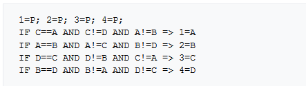

xBR过滤和像素风游戏渲染
像素风游戏渲染
使像素风游戏好看的秘诀就是让你的Sprite的一个像素渲染到屏幕的一个像素或者其他的整数个像素。实现这一目的的诀窍就是调整Camera的Orthographic Size。
正交相机的orthographic size就是垂直方向上显示区域是几个unit，即Unity中单位长度, 决定了在垂直方向上一个unit能显示多少个像素。在一个1080的屏幕上，camera的orthographic size是5，那一个unit能显示108个像素（1080 / (5 * 2)）。如果Sprite的Pixels Per Unit刚好是108，那渲染效果就是正确。Orthographic size定义的是从屏幕中心到顶部，所以乘了2.
为啥需要这样呢， 如果不对齐就会出现这样的现象：
这些格子表示屏幕上一个一个的像素，我在这些格子上放了一个移动的蘑菇，每个格子中心的点代表这个像素的采样点。因为我们使用的是Nearest-Neighbor/Point Filtering，这个点就是采样一个纹理时唯一关注的东西。当新的颜色的边缘穿过这个点时，这个像素就会马上改变颜色。
当源纹素网格跟输出网格对不齐时就会出现问题。上面的粒子中，蘑菇的图片是16x16，但是我把它缩放了一下，让它占17x17。这就意味着在每一帧的某个位置，一个像素重复了。当我们移动蘑菇时，这个重复的位置还会变化。
因为每个纹素渲染的时候都比一个像素大了一丢丢，在某个时刻它就会跨国两个相邻像素的采样点，两个采样点都在同一个放大的纹素内，所以两个像素都去找最近的纹素，这样这个纹素就输出在了屏幕上的两个地方。
红框部分为一个纹素跨过了两个采样点
像素匹配的蘑菇
整数倍放大的蘑菇
在这种情况下，由于只有1/16比例的差异，每个纹素出现在奇怪的地方只有一帧或两帧，然后转移到它相邻的纹素上，产生了一个双倍像素的波纹，看起来像在图像上滑动。
解决方法就是缩放你的像素图片，让他以整数倍的缩放显示在屏幕上。
Mario~
Pixel-art scaling algorithms
https://en.wikipedia.org/wiki/Pixel-art_scaling_algorithms
像素风格的图像缩放算法是一种滤镜，通常用于比较古老的游戏机模拟器中来增强显示效果。像素风图像的缩放属于图像缩放领域。
像素风图像一般分辨率很低，用到的颜色数较少，已经有好几种算法开发出来用来缩放像素风图像，因为传统的缩放算法没有考虑像素风图像的特定，用特定的算法放大图像，可以提高分辨率，丰富颜色，并且提高清晰度。
这些技术大部分用在早期游戏机的模拟器上，许多模拟器要求每秒60帧运行，这就要求这些算法效率足够高，目前2x最常用，同时也有3x，4x，5x，6x。
EPX
Eric的Pixel Expansion（EPX）是由Eric Johnston于1992年左右在LucasArts开发的算法，当时将SCUMM引擎游戏从IBM PC（运行320×200×256色）移植到早期彩色Macintosh计算机上 或者说分辨率的两倍。算法如下，根据P像素周围四个像素把P扩展为四个新像素：
后来实现了稍微高效但功能相同的实现（如2001年开发的AdvMAME2×和Scale2×）：

Scale3×/AdvMAME3× and ScaleFX
AdvMAME3×/Scale3×算法可以当成EPX放大3倍的版本。
Sp3kyFox开发了一种名为ScaleFX的Scale3X改进版，以及一种名为ScaleFX-Hybrid的Reverse-AA版本
Eagle
2×SaI
Super 2×SaI and Super Eagle
hqnx family
Maxim Stepin的hq2X，hq3X和hq4X的缩放倍数分别是2，3，4.每个像素通过和周围八个像素颜色的比较，将将邻居标记为接近和远离，并使用一张预先生成的Lut来找到相应的输出。
hqnx早起是为Super Nintendo模拟器ZSNES开发的。bsnes的作者公开发布了一个节省空间的版本。有几个可以和早期xBR效果相当的shader实现：https://github.com/libretro/common-shaders/tree/master/hqx
xBR family
作者写的教程： https://forums.libretro.com/t/xbr-algorithm-tutorial/123
xBR有六种：xBR，xBRZ，xBR-Hybrid，Super xBR，xBR+3D，Super xBR+3D。
xBR（“scale by rules”），由Hyllian开发，跟hqX原理很像，都是模式识别，而且如果输入的区域相同会产生相同的结果。然而，它通过使用两阶段插值规则比HQx更进一步，它可以更好地处理更复杂的模式，例如抗锯齿线和曲线。缩放的背景纹理保持原始图像的锐利特征，而不是像HQx（实际上通常是ScaleHQ）那样变得模糊。最新版本的xBR有多个pass，可以更好的保留细节。还有一个跟Reverse-AA结合的版本叫xBR-Hybrid。xBR+3D是有一个3D mask来只过滤2D元素的版本。
Zenju的xBRZ是基于xBR的修改版。它是用C++在CPU端实现的。它也用了和xBR一样的模式识别和插值思想，但使用不同的规则来保留图像细节。这使得它可以用来缩放脸部，特别是眼睛中的细节。xBRZ针对多核CPU和64位架构进行了优化，即使在单核CPU上，性能也比hqx高40-60%。它也支持缩放有alpha通道的图像，缩放倍数为2-6倍。
Super xBR是Hyllian在2015年开发的。它以非线性的方式结合律已知的线性过滤和xBR的边缘检测规则。它使用了两个pass而且只能放大两倍。
DNF的画质提升就是使用的xBR算法中的lv2-fast，这个算法根据一个一种边缘检测规则和插值规则将原图中的一个像素放大为四个像素。

如果简单的使用Bilinear过滤，图像会没有锯齿，但是清晰度也会下降,使用xBR过滤既消除了锯齿又不会导致清晰度下降：
原图（左） Bilinear（中） xBR（右）
应用
游戏中的OrthograohicSize是固定的，所以需要根据OrthographicSize和Sprite的Pixel Per Unit计算出要渲染的RenderTexture的大小来使像素匹配。
第一版
创建一个Camera，场景物体渲染到这个Camera，Camera的Target是一张RenderTexture（xBR-Input），大小由Camera的OrthographicSize和屏幕的宽高比计算出来，FilterMode为Point。
1
2height = orthoGraphicSize * 100(PPU) * 2;
width = height * aspect;xBR-Input作为输入，用xBR算法处理渲染到屏幕上。
Rednertexture：1张1080RGBA（带深度）
Blit：1次
第二版(只处理角色)
第一版的问题是没有过滤想要过滤的部分，游戏中Camera的Size是2.7，计算出来RT的高就是540，游戏中场景部分是用的比较高的分辨率，这样会把场景部分先缩小又放大，降低清晰度，而且场景部分不是像素风不适合xBR，所有需要只过滤角色部分。
- 场景物体渲染到xBR-Input上，xBR-Input由OrthographicSize和宽高比计算出来，再乘个2，如果Size是2.7，计算出来RT的高就是1080。角色部分写入Stencil，加上AlphaTest把角色周围一圈标记出来。
- 把xBR-Input的Stencil信息渲染到xBR-Stencil上，当时考虑的是模板测试是在片元着色器计算之后，而xBR过滤的片元着色器计算非常复杂，这样把模板信息渲染到纹理后，就能在xBR片元着色器最开始判断是不是角色部分，如果不是直接返回xBR-Input的颜色值，省去复杂的计算。
- 把xBR-Input缩小一半目的是最后作为xBR过滤的输入放大两倍。讲道理如果不缩小两倍，只要让角色的Sprite边界的像素从偶数开始画，纹素大小设置为小一半的大小，也能满足xBR过滤输入的要求。
- 使用xBR-Stencil的信息来决定是渲染场景还是渲染角色，渲染场景就直接显示xBR-Input的颜色，渲染角色就显示处理xBR-Lit后的颜色。
RenderTexture：1张1080RGBA（带深度），一张1080单通道，一张540RGBA
Blit：3次
第三版（优化效率和内存）
第三版相对于第二版有两个改变，一个是不把Stencil 信息渲染到纹理，直接使用Stencil里的信息，因为在现代移动GPU上，如果不在FS里写入深度、模板、使用Alpha Test等，一般都会会使用Early-Z。另一个是在第二版的第④步中，处理角色部分时，如果xBR-Lit跟屏幕大小不是整数倍缩放，效果就不好，记住一个原则就是只要用了邻近过滤就要避免非整数倍缩放。
RenderTexture：1张1080RGBA(带深度)，一张540RGBA
Blit：3次
第四版
第三版可以优化的地方：
1，不把xBR-Input缩小一半，使用PixelSnap，让像素匹配小一半的屏幕，然后对xBR-Input过滤时把它当成是小一半的图片，即纹素大小小一半，但是发现round函数不管是在GPU还是在CPU都有误差，目前还没解决。
1 | inline float4 UnityPixelSnap2(float4 pos) |
PixelSnap的作用就是把顶点位置放到屏幕坐标的整数的位置，比如一个顶点转换为屏幕上坐标是64.67777，PixelSnap处理后就是65，unity使用的round来做四舍五入，这个round是四舍六入五取偶，在有的情况下Sprite会被拉伸，因为浮点数加法有误差所以加了个0.0005精确到千分位。
2，使用Screen.SetResolution修改屏幕Buffer的大小，这样就可以省掉一次Blit操作，在Android平台需要测试Blit Type这个设置，BlitType有三个选项：
- Always：总是先渲染到一张离线的RT，最后Blit到屏幕。
- Never：永远直接输出到屏幕，如果设备不支持渲染非native分辨率就会出问题，还有这个设置不支持sRGB的Buffer，在线性空间下有问题。
- Auto：如果设备支持渲染到不是native的分辨率，就直接渲染，否则会渲染到一张离线RT再Blit。有的设备支持硬件缩放,设置为Auto时,如果设备支持硬件缩放就会使用硬件缩放,不支持就会多一次Blit,并且打印Hardware resolution scaling not supported, falling back to software scaling (blit).iOS好像怎么样都会用Blit
这个设置诞生的历史:
https://forum.unity.com/threads/big-performance-issue-with-unity5-on-android.338847/
Unity4到Unity5时,Unity渲染时统一加了一个Blit操作,导致很多人发现自己的游戏变慢了很多,2017才加了这个设置,可以控制用Blit还是硬件缩放还是自动选择.
RenderTexture：1张1080RGBA(带深度)
Blit：2次